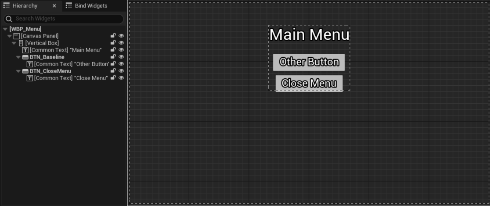
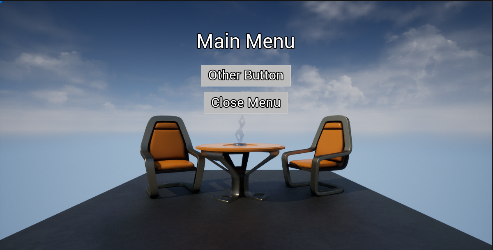
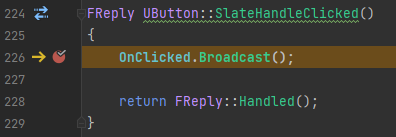
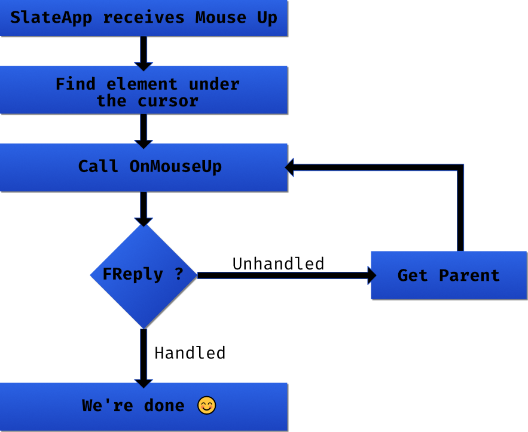
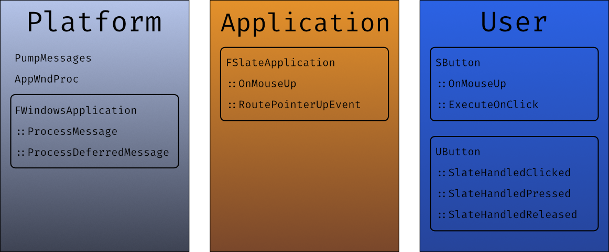

Unreal UI Input Routing
Input handling in UI is an interesting subject. It often gets more complicated than gameplay code, and there's as many ways of "doing something" in a menu as there are designers in the world. As an engineer you're probably going to encounter a situation where the eldritch hunger of your UX person is too strong to satiate, and you'll have to put that button down, and you'll click the button, and nothing's going to happen...
At that point, since you can't really tell them that this very simple thing that should obviously work actually doesn't, you're gonna need to understand what the heck happens between you clicking your mouse, and that UMG widget "Click" node firing.
So let's just do that ! Step by step, we'll start from the very low level and see how each layers has a thing to say on your inputs :)
The Basics
First step on our journey, we need a starting point. Going from the old saying I just made up If something happens, some code somewhere must run, we want some place to put a breakpoint. So let's find a nice test case that will give us a predictable callstack to work from.
A simple use case that unreal supports well is the clickable button ! Using UMG, the button you can drag and drop is of the UButton class. If we look that class up and check the structure, we can see a bunch of "SlateHandle..." functions.
1 2 3 4 5 6 | |
As the comment wisely says, those are the entry points from Slate that are directly forwarded to the blueprint events. This gives us a straightforward place to put a breakpoint ! Let's make a simple menu with a button, show it, and switch the game to UI input mode. This will give us a callstack that we can study !
 Wait, UI input mode ? What is this about ?
Wait, UI input mode ? What is this about ?Good question ! Any tutorial kinda tells you to do that without really talking about what it implies :) But we'll see first hand what exactly happens later. Just trust me for now !
Here's the menu we'll be working from, you can really do whatever you want, the only thing we need is a UButton instance. We don't even need to bind any event to it !

In the level blueprint I put some boilerplate code to show the menu, set us in the right mode, and show the cursor. Feel free to copy it here :)
Alright, if we press play and the Tab key, we should see our menu appear ! On top of it we have full mouse control :)
Perfect to click our little button.

Here we only have to put our breakpoint in the SlateHandleClicked function of the UButton class, click our button, and pray we actually break 🙏
Aaaaand...

We got a hit !
So, what does our callstack looks like 👀 I've inlined some comments, feel free to peruse.
Commentary |
Code |
|---|---|
| We're here ! -> | |
|
|
|
|
|
|
|
|
|
|
| Slate event 😲 | |
|
|
|
|
| Where routing happens | |
|
|
| Application event 😊 | |
| Interesting stuff here 👀 | |
|
|
| More interesting stuff 👀 | |
|
|
|
|
|
|
| The windows event pump, we don't care much below this |
|
|
|
|
|
|
|
|
|
|
|
|
|
|
Alright ! Lots to talk about, and this is just the MouseUp event, you'll see similar callstacks for all other events with some slight differences but the idea is the same.
Platform land
As you can see the inputs are starting at the OS level, in this case Windows, when you press a button or the mouse, it pushes a WM_ event to a queue that the application, our friend the Unreal Engine, can pump and do stuff with.
You can see that happening in the ProcessMessage function where a big ol' switch decides what goes where. If you go take a look you'll see special mentions for the ALT+F4 boy 👀, you should also take a look at the WM_INPUT event, lots of dark magic there... Anyway, generally you'll see a whole bunch of stuff a standard windows application is supposed to support, and most events ends up calling this DeferMessage function.
DeferMessage doesn't matter much here, its main goal is to make sure the rest of the stack goes on the Game thread, it's a fairly standard setup where it queues messages when needed, and the messages get dequeued elsewhere when the application knows it's safe to do so.
After that we fall into the ProcessDeferredMessage function, it looks a lot like ProcessMessage but this time we have some guarantee that we are on the game thread ! All that thanks to the DeferMessage call. You'll see here that Unreal does some processing to the message parameter, let's review a few for taste :
ClientToScreen(hwnd, &CursorPoint);: We see some transformation from the OS (client) space to the unreal expected screen spacecase WM_LBUTTONDOWN: MouseButton = EMouseButtons::Left;: We have some translation from OS events to unreal, in this case the various WM_[L/R/M]BUTTON[DOWN/UP] are squashed toOnMouseUpOnMouseDowneventscase WM_ACTIVATEAPP: UpdateAllModifierKeyStates();: Some global input flags update ! Those are cool if you're in tooling and need some CTRL+Key combos :)
We're not going to go through all windows messages, but if you want to know more about how the various OS interaction happens, I highly recommend you check these out !
At this point we're reaching the end of the OS layer and entering application layer land. You'll see that most of those events ends up calling stuff on this MessageHandler guy, and in our case it's going to be our friend the SlateApplication 😁
TSharedRef FSlateApplication::Create(const TSharedRef& InPlatformApplication)
{
[... abridged ...]
CurrentApplication = MakeShareable( new FSlateApplication() );
PlatformApplication->SetMessageHandler( CurrentApplication.ToSharedRef() );
[... abridged ...]
}
Application land
Tap on the back ! We're out of Platform space and entering the livelier Application space 👀 We're not exactly home as Unreal don't expect you to directly interact with this level when building a menu, we're somewhat in the garden... You've probably seen the FSlateApplication throw rocks at your window as your SButton son opened the door to receive his MouseUp message, then walking to you in the kitchen to tell you he's been clicked while you prepare delicious cookies... Ok, the metaphor has escaped me let's move on ! Let's continue our descent !
Here's the cut down callstack we have left, I've taken the liberty of removing lambdas and indirection we don't care much about :
| Commentary | Code |
|---|---|
| Our UMG button 👀 | |
|
|
| Our Slate button 😲 | |
| Finding who should get the mouse up | |
|
|
| Application starts here ! | |
Interestingly the flow here is relatively simple ! Here it is schematized :

So coming from the Slate Application, we find the element under our cursor, call the OnMouseButtonUp function common to all SWidget on it, the SButton specialisation does some shenanigans that dispatches it to the UMG UButton, that then dispatches it to the blueprint 😊 Simple enough !
Well, of course the devil is in the details. In FSlateApplication::ProcessMouseButtonUpEvent we can see that an InputPreProcessor might decide to interrupt the flow :
1 2 3 4 5 | |
The routing could fail to find your button, it's possible that something below your button (or widget) reply that the even is handled before it got a chance to bubble to you ! In which case it can get a bit hard to track because of the recursive nature of FSlateApplication::RoutePointerUpEvent, I recommend setting a breakpoint that detects when the reply is handled, you can then check who decided to handle the event in your stead 😈
Now the last piece is the SButton, as I've stated earlier this is actually starting to be your home ! It's pretty easy to write a replacement to SButton and just plop it where you need it. If we take a quick look at SButton::OnMouseButtonUp we can see a whole lot of stuff happens there that might result in ExecuteOnClick not happening, for example if we set the click method to MouseDown, or if we moved the mouse outside the button between the mouse down and mouse up event, or other stuff ! Those are all design decisions that comes from the general requirement Epic wanted for their SButton ! You're free to rewrite an equivalent class that actually fit your requirement, and as we'll see that's exactly what happens with the CommonUI buttons 😲
Taking a step back
Alright ! We've seen a lot of things and I'd like to recap. We've seen that there's more or less 3 layers that any physical inputs goes through before reaching the high level user space. I've recapped them here :

Of course this isn't the whole picture, a few questions rises up, what was this UI InputMode about ? What is it here that decides if the input goes to the game or to slate ? We've seen that there's nothing particularly game related in the code path we saw, but we know you can bind stuff to left click. So what's different in the "game" flow ?
I think this article has been long enough, we'll cover those questions in the next one 👀 Stay tuned !